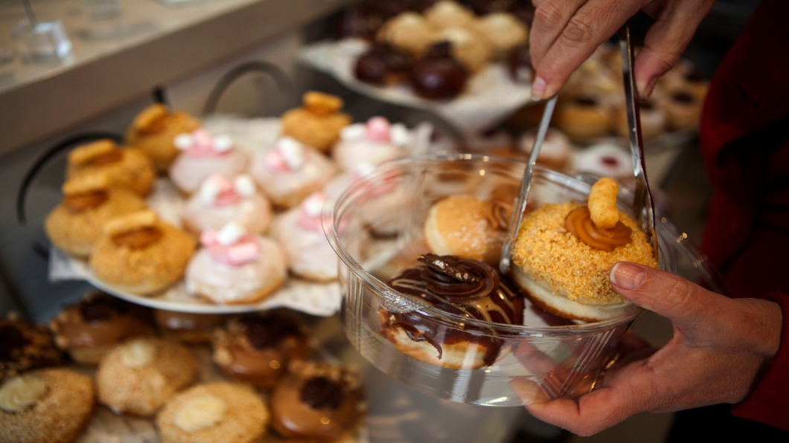

年底了，世界各地沉浸在歡樂耶誕節氣氛中，許多歐美國家都把耶誕節前後定為國定假日，
這讓不過耶誕節的猶太族群，感到格格不入；因為信奉猶太教不可以「歡慶」耶穌誕生，
假期裡沒餐館吃飯的猶太人，只能鑽進同樣不放耶誕假的中國餐廳填飽肚子，萬般無奈。
但在猶太人較多的地方，像是猶太聖城以色列耶路撒冷，這時間是慶祝光明節；
猶太傳統甜甜圈用料豪奢，裝飾華麗，又因是期間限定販售，每家糕餅店都力求表現，
讓當地的猶太人吃得一點都不委屈！
對生活在歐美國家的猶太人而言，多數人期待的年底耶誕假期，卻讓他們尷尬；
小孩們失望拿不到禮物，大人們也不好大肆團聚歡慶，因為猶太人是不過「耶誕」節的！
耶誕節慶祝基督宗教中的大人物耶穌誕生，但因為宗教教義上的分歧，
猶太人並不信耶穌是上帝的兒子救世主，當然也不慶賀他的生日。但公眾假期，
歐美餐館多半也不營業，放假都還願意工作的幾乎只剩中餐館，
於是出現了有趣的猶太人在耶誕節吃中餐現象。
